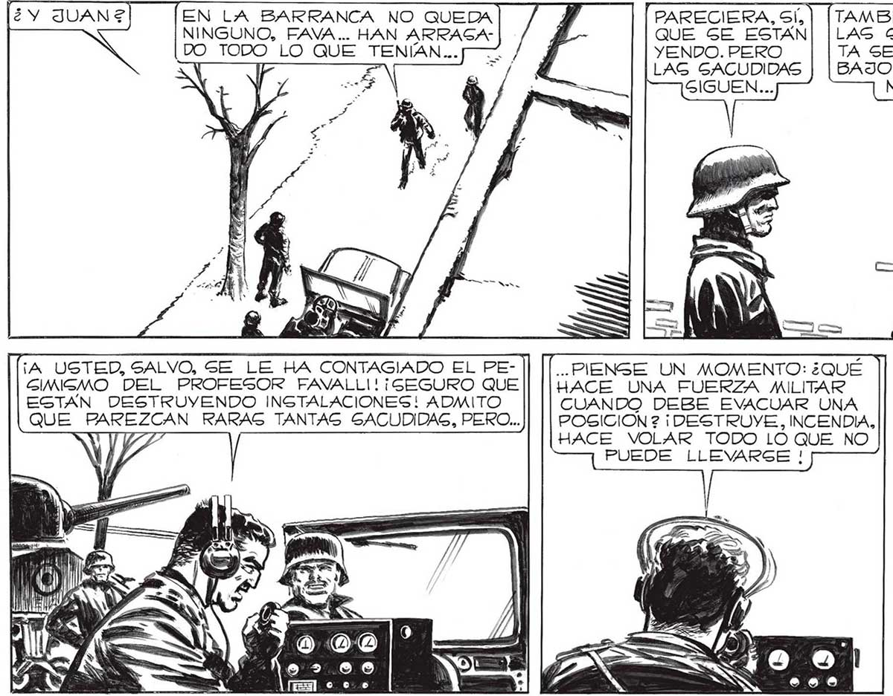
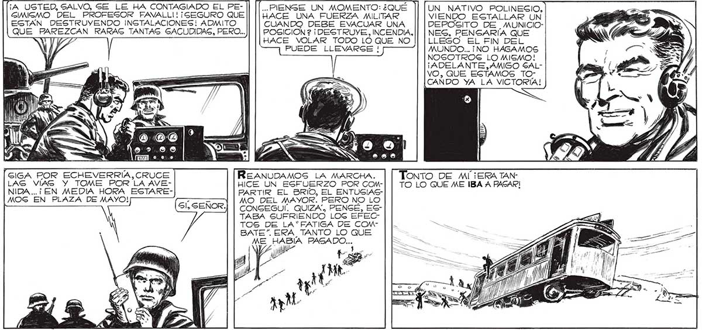

186 | | EN LA BARRANCA NO QUEDA J PARECIERA, Sí, NINGUNO, FAVA... HAN ARRAGA- Á QUE GE ESTAN DO TODO LO QUE TENÍAN... 7 Já YENDO. PERO LAG GACUDIDAS GIGUEN... ¡A USTED, SALVO, SE LE HA CONTAGIADO EL PE- ... PIENSE UN MOMENTO: ¿QUÉ GIMISMO DEL PROFESOR FAVALLI! ¡SEGURO QUE HACE UNA FUERZA MILITAR EGTAN DESTRUVYENDO INSTALACIONES! ADMITO TAMBIEN NOSOTROS LAS GENTIMOS. HAGTA SE VINIERON ABAJO ALGUNAS CORNIGAS... UN NATIVO POLINESIO, VIENDO ESTALLAR UN CUANDO DEBE EVACUAR UNA DEPOSITO DE MUNICIOQUE PAREZCAN RARAS TANTAG SACUDIDAS, PERO... POGICION ? ¡ DESTRUYE, INCENDIA, || | NES, PENGARÍA QUE HACE VOLAR TODO LO QUE NO LLEGO EL FIN DEL PUEDE LLEVARGE ! We) DA GIGA POR ECHEVERRIA, CRUCE REANUDAMOS LA MARCHA. LAS VIAS Y TOME POR LA AVE- HICE UN ESFUERZO POR COMNIDA..¡ EN MEDIA HORA ESTARE- PARTIR EL BRIO, EL ENTUSIASMOG EN PLAZA DE MAYO! [| MO DEL MAYOR. PERO NO LO | CONSEGUÍ. QUIZA. PENSÉ, ESTABA SUFRIENDO LOG EFECTOS DE LA'“FATIGA DE COMBATE”. ERA TANTO LO QUE ME HABIA gras: MUNDO... ¡NO HÁGAMOS NOSOTROS LO MISMO! ¡ADELANTE,AMIGO SALVO, QUE EGTAMOS i=a [CANDO YA LA VICTORIA! a TONTO DE MÍ ¡ERA TANTO LO QUE ME IBA A PASAR! Fu HAGTA EL JEEP DEL TRAGMIGOR E INFORMÉ AL MAYOR. ESO EG TODO, SEÑOR. Sl NO FUERA POR LAS GACUDIDAS, DIRIA QUE ESTAN EVACUANDO TODO. ¡NO GEA CABEZA DURA, HOMBRE !

